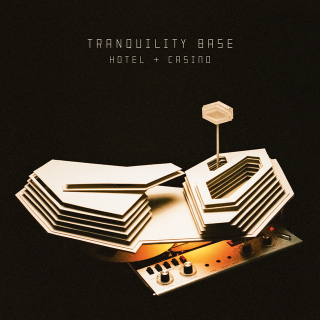
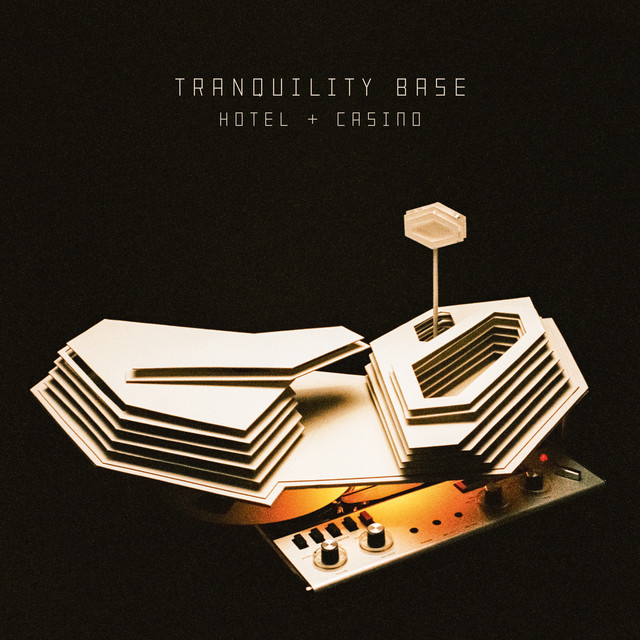
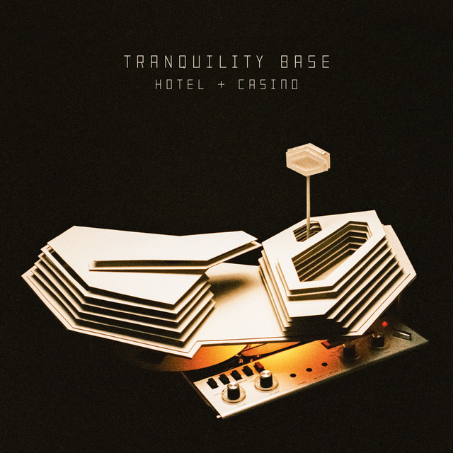

ALBUMS


 

- "I bet you look good on the Dancefloor"


Alex Turner nació en el año 1986, en Sheffield, Inglaterra. Alex es hijo de dos profesores, los cuales desde muy chico le enseñaron a hablar alemán y lo acercaron a la música. En el año 2001 le regalaron su primera guitarra.
Posee influencias de bandas como Oasis, que según el mismo declaró, ayudó a que empezara a tocar la guitarra. Cuando tenía 16, Turner formó Arctic Monkeys junto a otros tres amigos en su natal Sheffield.
Siendo su primer éxito su álbum debut, "Whatever People Say I Am, That's What I'm Not", lanzado en 2006. La canción más exitosa de ese álbum fue "I Bet You Look Good on the Dancefloor", que alcanzó el número uno en las listas de sencillos del Reino Unido. Este álbum fue muy aclamado por la crítica y ayudó a establecer a la banda como una de las principales en la escena musical británica.


Después de que Andy Nicholson anunciara que no haría el tour por Norteamérica con la banda, O’Malley, un amigo de la banda” y bajista de The Dodgems, fue incluido como un reemplazo temporal. Su primera aparición con la banda fue el 25 de mayode 2006 , cuando la banda hizo un concierto secreto en el “Old Blue Last” en Londres Este. El local, con capacidad de 120 personas, fue visto como una oportunidad para hacer una prueba a O’Malley antes del primer concierto de la banda en Vancouver el 27 de mayo de 2006

Según la lista de los 10 mejores bateristas de la historia de la revista Q, Helders es el 9º mejor de la historia, por delante de Reni de The Stone Roses. Helders ha dicho que terminó como baterista porque “era lo único que quedaba. Cuando empezamos la banda ninguno sabía tocar nada. Lo dedujimos. Los demás ya tenían guitarras y yo me compré una batería después de un tiempo”. Sin embargo, Helders ha declarado la influencia de la música rap que la banda tiene.